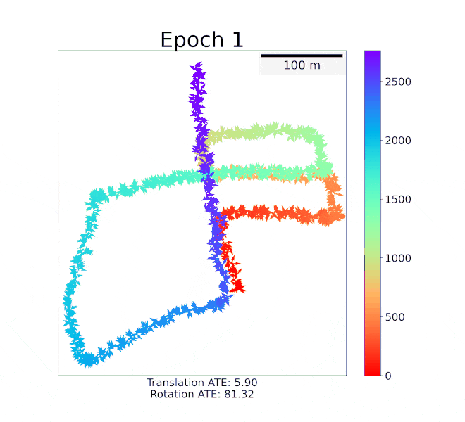
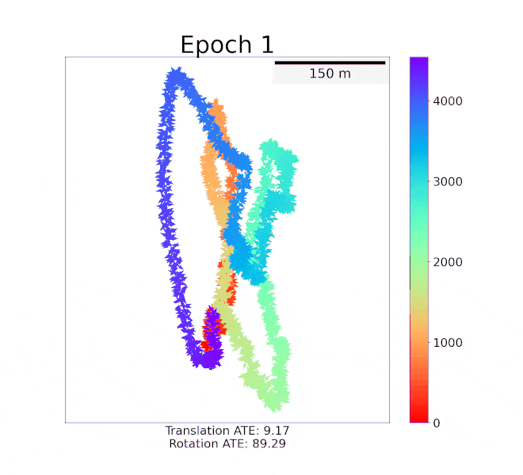
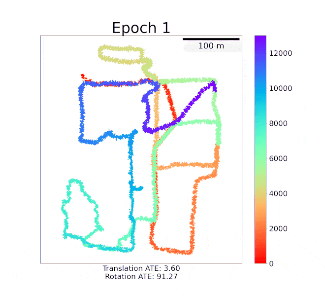
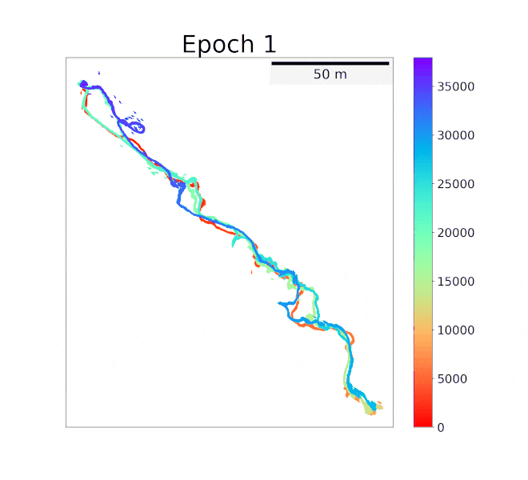

Individual reconstruction
Scene completion
Object detection
Semantic segmantation
Mapping result on the KITTI dataset. The bird's eye view map is shown together with the estimated sensor pose of each frame. Each pose is represented by an arrow indicating the xy-coordinate and heading (yaw angle) as shown in the bottom examples.
LiDAR mapping is important yet challenging in self-driving and mobile robotics. To tackle such a global point cloud registration problem, DeepMapping converts the complex map estimation into a self-supervised training of simple deep networks.
Despite its broad convergence range on small datasets, DeepMapping still cannot produce satisfactory results on large-scale datasets with thousands of frames. This is due to the lack of loop closures and exact cross-frame point correspondences, and the slow convergence of its global localization network.
We propose DeepMapping2 by adding two novel techniques to address these issues:
Pipeline of DeepMapping2. The pipeline mainly consists of place-recognition-based batch organization and learning-based optimization. In batch organization, the input point clouds are organized into mini-batches by topological map attained from place recognition. Each batch contains an anchor frame and several spatially closed neighbor frames. The transformation between the anchor frame and each neighbor frame is obtained by pairwise registration. In optimization, each batch is fed into L-Net to estimate the global pose. The transformed global anchor frame is then obtained in two ways: directly from the global pose of the anchor frame and from the global pose of the neighbor frame and the pairwise registration.
@article{chen2022deepmapping2,
title={DeepMapping2: Self-Supervised Large-Scale LiDAR Map Optimization},
author={Chen, Chao and Liu, Xinhao and Li, Yiming and Ding, Li and Feng, Chen},
journal={arXiv preprint arXiv:2212.06331},
year={2022}
}